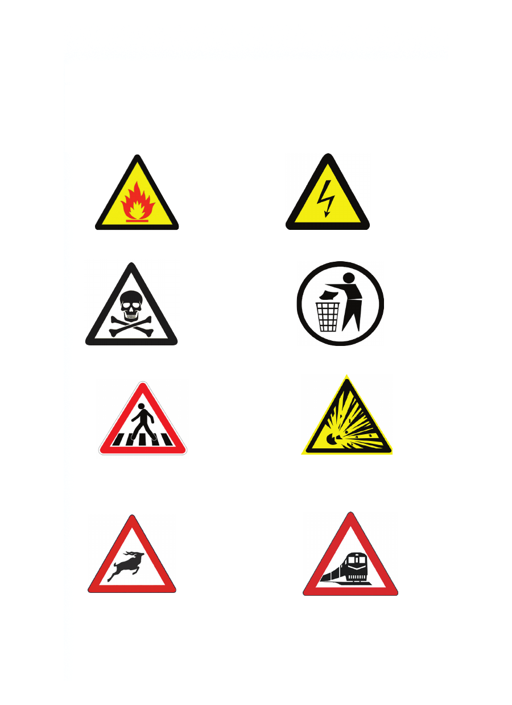

Matumizi ya alama za tahadhari katika mazingira yetu
Alama za tahadhari hutumika kuonya, kukataza na kuelekeza.
Vilevile, hutambulisha hatari inayoweza kutokea endapo
hutofuata maelekezo. Zifuatazo ni baadhi ya alama za
tahadhari.
Alama ya moto Alama ya umeme mkubwa
Alama ya hatari Alama ya usafi wa mazingira
Alama ya kivuko cha Alama ya mlipuko
waenda kwa miguu
Alama ya hifadhi ya Alama ya reli inakatisha
wanyama
Matumizi ya alama za tahadhari katika mazingira yetu Alama za tahadhari hutumika kuonya, kukataza na kuelekeza. Vilevile, hutambulisha hatari inayoweza kutokea endapo hutofuata maelekezo. Zifuatazo ni baadhi ya alama za tahadhari. Alama ya moto Alama ya umeme mkubwa Alama ya hatari Alama ya usafi wa mazingira Alama ya kivuko cha Alama ya mlipuko waenda kwa miguu Alama ya hifadhi ya Alama ya reli inakatisha wanyama